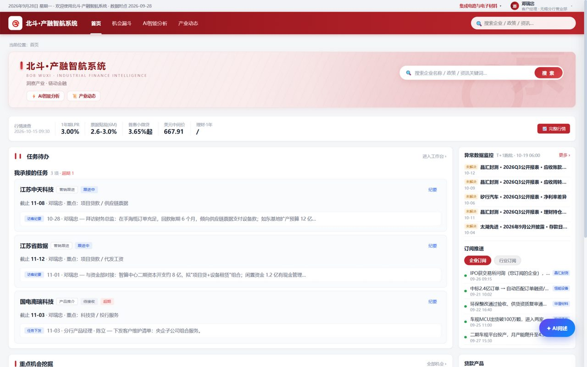
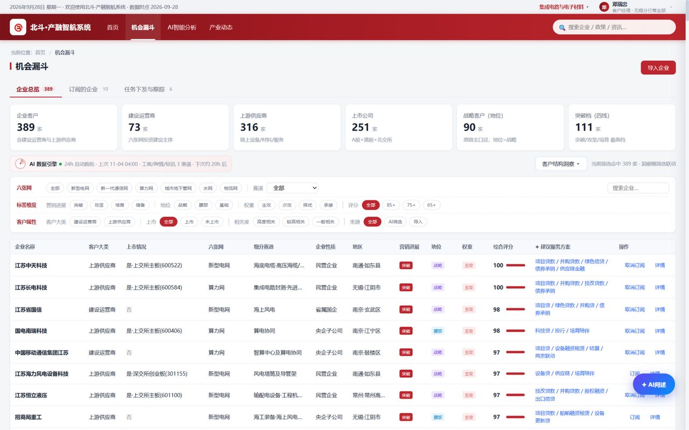
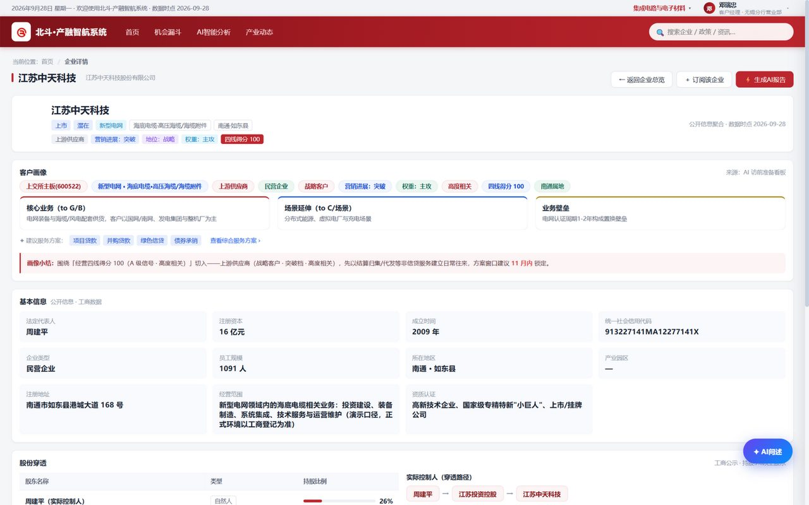
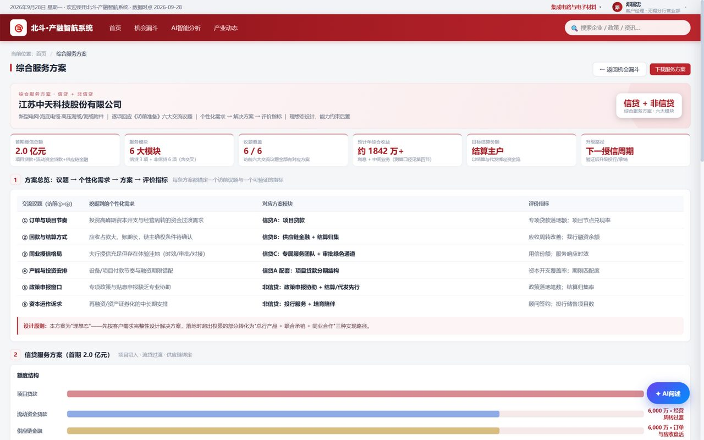
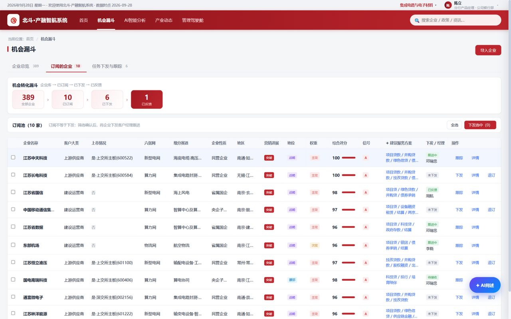
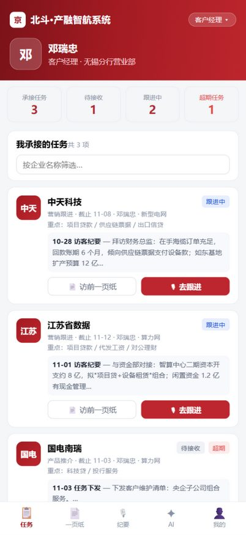
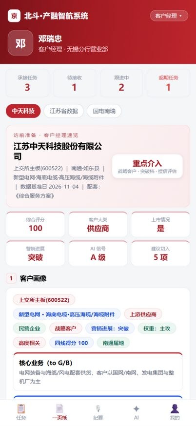
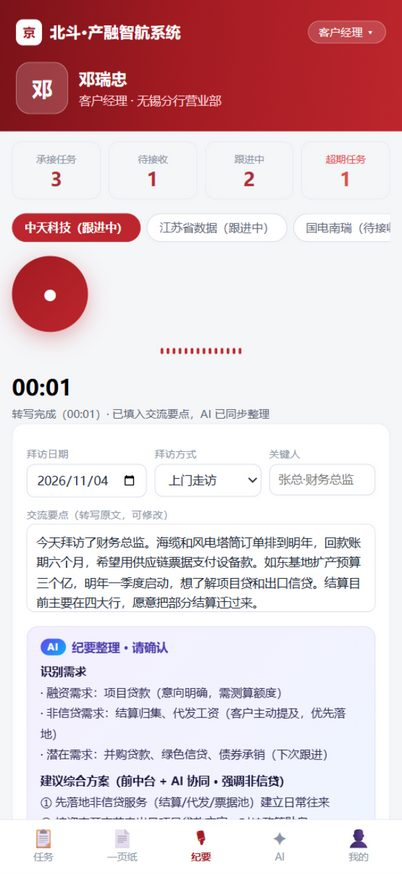
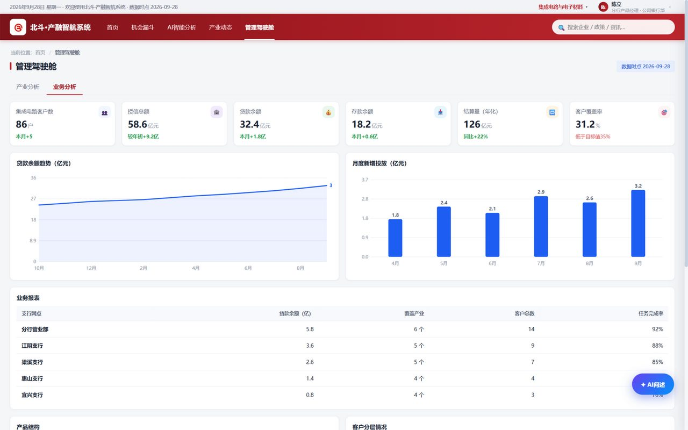
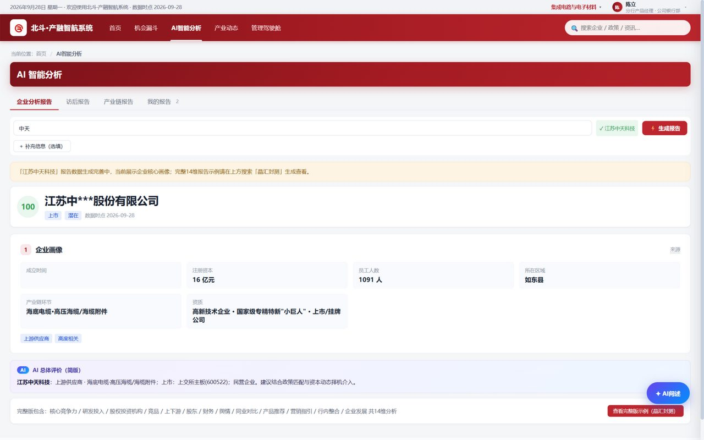

1 2看得见 —— 机会不用翻报告。① 任务待办把今天该拜访谁、为什么是它、主推什么产品直接到人到卡；页面下方的"重点机会挖掘"由 AI 从公开信号持续筛出，每条带完整依据、可一键转任务。② 右上角是唯一的角色切换入口，客户经理、支行长、产品经理、负责人四个视角一点即换，全程没有多级菜单。

1 2 3看得见 —— 「十五五」六张网超 26 万亿投资，被 AI 穿透成 389 家可数的企业清单：② 标签维度行（进展·地位·权重·评分）点选即筛，宏观机会落到一份可直接执行的名单，这是"看得见"。点任意一行的 ③「详情」，进入锁定环节。

1 2锁得准 —— 为什么是它，一屏讲清：① 客户画像给出四线得分 100、战略客户、突破档、高度相关的完整依据，画像小结直接写明切入路径（先以结算归集/代发等非信贷服务建立往来）和时点建议（11 月内锁定方案窗口）。多源信息交叉验证，不是拍脑袋。点 ②「查看综合服务方案 ›」，进入打法环节。

1 2锁得准 —— 打法自动生成：② 方案总览把六个交流议题、对应的方案模块、可验证的评价指标一一配对，首期 2 亿元信贷 + 非信贷组合同时给出。点 ①「下载服务方案」即可带去拜访——过去咨询项目数周交付的方案，现在一线人员几分钟自助完成，这就是"AI 把方法论变成可复制的自助能力"。

1 2推得动 —— 机会要动起来，靠协同：转化漏斗 389 → 10 → 6 → 1 全程在线可见，订阅池勾选企业、AI 预填任务说明，点 ②「下发选中」一键派单到客户经理。从看见机会到分派到人，只差一次勾选，每一步留痕。

1 2推得动 · 看任务 —— 手机一打开，① 承接任务排在最前：今天该拜访谁、截止时间、重点产品、上次跟进摘要一屏读完，顶部还有超期预警。点 ②「访前一页纸」，出发前先做功课。

1 2 3推得动 · 做功课 —— 出发前一分钟速览：② 速览头卡直接给结论——"重点介入"，战略客户·突破档·尽调评估；③ 关键指标格：综合评分 100、AI 信号 A 级、建议切入 5 项；往下是客户画像与建议对接人。锁得准的结论装进口袋，见到客户就知道谈什么。

1 2 3推得动 · 沉留痕 —— 拜访现场：选好客户（① 任务），按 ② 录音键口述过程，停止后自动转写填入交流要点，点"✦ AI 整理"生成 ③ 纪要整理卡——识别融资与非信贷需求、建议中台协同的综合方案，客户经理只需确认归档。动作沉淀在系统里，不留在笔记本上，最后一步"推得动"就此闭环。

1 2管理者的系统视角：切"部门负责人"进驾驶舱，点 ②「业务分析」——支行任务完成率、漏斗转化、产品结构一屏总览。推得动的管理闭环：管理者看到的不只是结果，而是过程本身，哪一环卡住一目了然。

1 2看得见 · 锁得准的底层引擎：模糊搜索企业，14 节分析报告（② 报告主体：画像/竞争力/财务/舆情/同业对比/产品推荐/营销指引）几分钟自助生成，一键导出"访前一页纸"。曾经重金投入才能交付的产业金融方法论，今天 AI 把它变成每个一线人员可复制的自助能力——六张网只是第一发炮弹，方法论可复制到任何产业赛道。